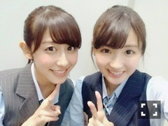
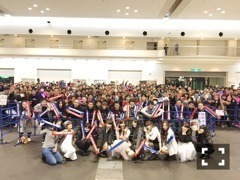
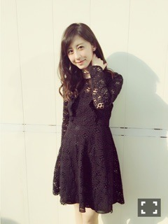
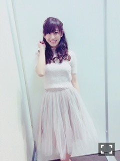

| 2016/03 04 Fri | 斎藤ちはる 握手会も！46時間も ！ぎゅっと凝縮。(´ >∀<｀)ゝ |
ちはるーむへようこそ\( ˆoˆ )/
誕生日が終わり、
46時間テレビが終わり、
乃木坂4周年を迎え、
うるう年が終わり、
ひなまつりが終わり、
ついに3月に突入し始めています。
お待たせしましたm(_ _)m
たくさんのお祝いコメント、
本当にありがとうございましたm(_ _)m！！
みなさんのおかげで、私は頑張れています。
逆に言うとみなさんがいないと私はだめということです。ほんとに。
いつもありがとう。
先週末は13thラストの全国握手会、個別握手会でした！
まずは全国握手会。さゆとペア\( ˆoˆ )/
会場に入るまでにもたくさん待たせてしまったみたいですみません(> <)
皆さん手が冷たかった...
さゆとは笑いのツボが似てて、ずーっと笑ってたね(｡-_-｡)
休憩時間とかも楽しかったな♡
芯が強いさゆ、かっこいいなぁ。
大好きーー(﹡ˆ ˆ﹡)

2人ともポニーテール♡
ちはるーむめいとさん達、会いに来てくれてありがとうございました( ◦˙ ˙◦ )！
楽しかったよ♡
サユリストの皆さんもありがとうございました！
そして日曜日は個別握手会。
誕生日に直近だった日曜日に、
私の19歳の誕生日の生誕祭を行ってくださいました！！
5部終わりということで時間も遅かったのにも関わらず、思ってたよりもたくさんの方が残ってくださってて嬉しかった...♡
皆さんありがとうございました\( ˆoˆ )/
そして何より、生誕委員の皆さん！
本当にありがとう♡
皆さんのおかげで楽しい楽しい生誕祭を過ごすことができたよ！！
幸せな時間を、ありがとう。

5部終わりで疲れてるはずのメンバーもきてくれて...♡
チームDのみんなはメッセージコメントもくれたよー！
誰にも言ってなかったけど、危うく泣きそうになった...危ない危ない...
今回はアメフトをテーマにしてくださったり
何空の、青空にコメントを書いてくださったり
愛を感じられてとっても嬉しかった。
たくさん考えてくれたんだなあ、
たくさん準備してくれたんだなあ、
としみじみ感じました。
これからも頑張ろうって改めて感じたよ(﹡ˆ ˆ﹡)
ほんとにありがとうございました！！
4部の私服\( ˆoˆ )/

one piece dress: ZARA
choker: Lily Brown
5部の私服\( ˆoˆ )/

tops: snidel
skirt: snidel
choker: Lily Brown
黒の大人っぽい感じと
白系の女の子っぽい感じで
イメージの違う感じ！！(﹡ˆ ˆ﹡)
握手会では、
お誕生日おめでとう！！
46時間テレビお疲れ様！！
46時間テレビのカラオケが上手かったよ！！
などたくさん話しました\( ˆoˆ )/
カラオケでは、乃木坂歌王2位をいただきましてヽ(；；)丿
ほんとうれしかったーー♡
歌が大好きだから、これからも
たくさん歌う機会が増えるといいなあ...♪
プリプリのM、十八番です。
本当は残酷な天使のテーゼとか
赤いスイートピーとか歌おうと思ったんだけど
結果的にはよかったな( ◦˙ ˙◦ )
コスプレボーリングも結果は残念だったけど
すごく楽しかった！！
スペア取れてよかったヽ(；；)丿♡
少しは役立てたかな...？♪
卒業生の皆さん、
卒業おめでとうございます！！
春からはまた違った進路で、
たくさんの新しい出会いがあると思います。
その出会いがきっと自分に繋がる！
そう信じて頑張っていきましょう\( ˆoˆ )/
私もあっという間に大学2年生になり、先輩...！
後期の単位は心配だけど(> <)笑
斎藤ちはる